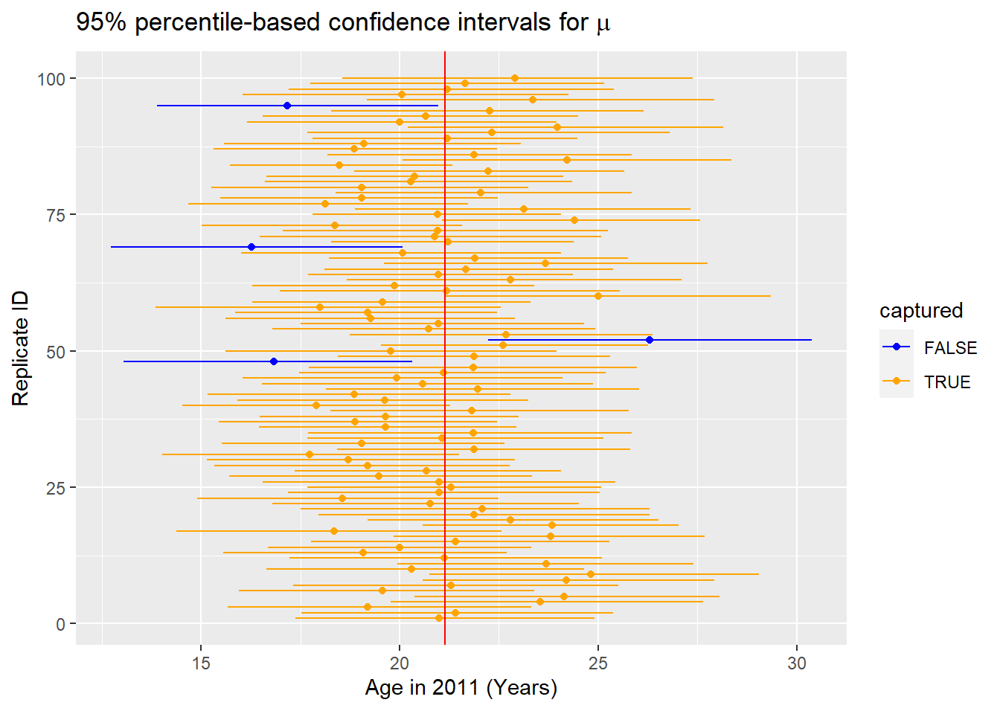
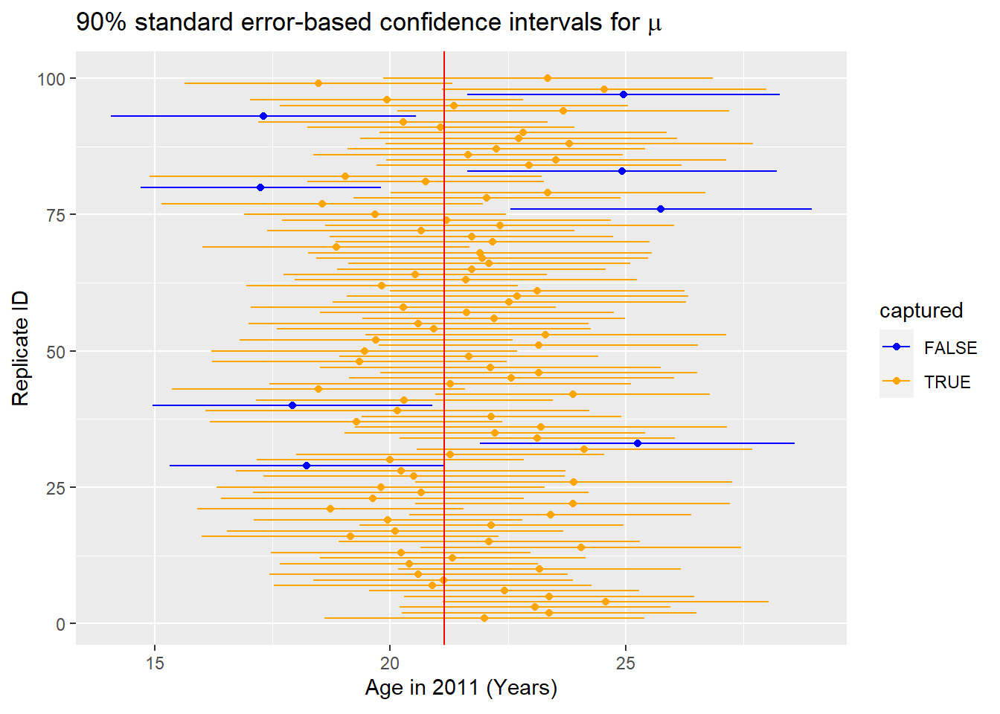

Interpreting the confidence interval
Recall that the confidence intervals we've produced are based on bootstrapping using the single sample orig_pennies_sample. We have been claiming that this is a sample from all the pennies in circulation in 2011, but we can now reveal that it is actually a sample from a larger number of pennies stored as pennies in the moderndive package. The pennies data frame contains 800 rows of data and two columns pertaining to the same variables as orig_pennies_sample. Its important to stress that this is very artificial, i.e. we would usually never have access to all the information about the larger group from which our sample is taken, but we have set up the data this way here to illustrate the properties of confidence intervals for the purpose of interpreting confidence intervals.
So let's assume that pennies is our population of interest (i.e. a population with \(N=800\) units). We can therefore calculate the population mean age of pennies in 2011, denoted by the Greek letter \(\mu\), by calculating the mean of age_in_2011 for the pennies data frame.
pennies_mu <- pennies %>%
summarize(overall_mean = mean(age_in_2011)) %>%
pull() #Use this function to extract the single value from the data frame
pennies_mu[1] 21.1525As we saw at the end of the previous section, one range of plausible values for the population mean age of pennies in 2011 (\(\mu\)), is \([21.27, 29.5]\). Note that the value \(\mu = 21.15\) (i.e. the mean of pennies calculated above) does fall in this confidence interval. So in this instance, the confidence interval based on orig_pennies_sample was a good estimate of \(\mu\).
If we had a different sample of size 40 and constructed a confidence interval using the same method, would we be guaranteed that it contained the population parameter value \(\mu\) as well? Let's try it out:
pennies_sample2 <- pennies %>%
sample_n(size = 40)Note the use of the sample_n() function in the dplyr package here. This does the same thing as rep_sample_n(reps = 1) but omits the extra replicate column.
We next create an infer pipeline to generate a percentile-based 95% confidence interval for \(\mu\):
percentile_ci2 <- pennies_sample2 %>%
specify(formula = age_in_2011 ~ NULL) %>%
generate(reps = 1000) %>%
calculate(stat = "mean") %>%
get_ci()
percentile_ci2# A tibble: 1 x 2
lower_ci upper_ci
<dbl> <dbl>
1 17.3 25.5This new confidence interval also contains the value of \(\mu\). Let's further investigate by repeating this process 100 times to get 100 different confidence intervals derived from 100 different samples of pennies. Each sample will have size of 40 just as the original sample. We will plot each of these confidence intervals as horizontal lines. We will also show a line corresponding to the known population value of 21.1525 years.

Of the 100 confidence intervals based on samples of size \(n\) = 40, 96 of them captured the population mean \(\mu = 21.15\), whereas 4 of them did not include it. If we repeated this process of building confidence intervals more times with more samples, we'd expect 95% of them to contain the population mean. In other words, the procedure we have used to generate confidence intervals is "95% reliable" in that we can expect it to include the true population parameter 95% of the time if the process is repeated.
To further accentuate this point, let's perform a similar procedure using 90% confidence intervals instead. This time we will use the standard error method instead of the percentile method for computing the confidence intervals.

Repeating this process for more samples would result in us getting closer and closer to 90% of the confidence intervals including the true value. It is common to say while interpreting a confidence interval to be "95% confident" or "90% confident" that the specified confidence interval contains the true value. We will use this "confident" language throughout the rest of this chapter, but remember that it is a theoretical statement about what we would expect to happen if we to sample again and again from the same population (which we don't do in practice, of course).
Back to our pennies example; after this elaboration on what the level corresponds to in a confidence interval, let's conclude by providing an interpretation of the original confidence interval result we found in the last section.
We are 95% confident that the range of values from 21.27 years to 29.5 years contains the true mean age of pennies in circulation in 2011.
This level of confidence is based on the percentile-based method including the true mean 95% of the time if many different samples (not just the one we used) were collected and confidence intervals were created.